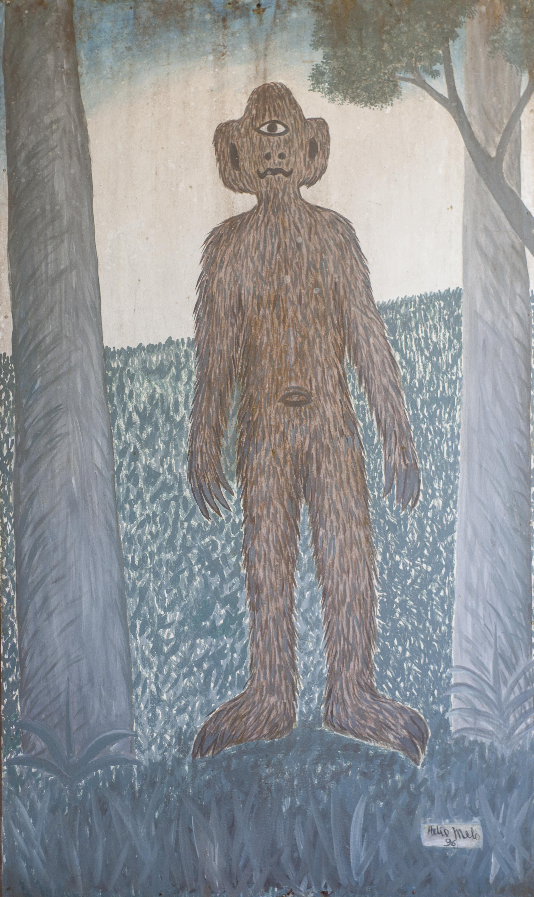
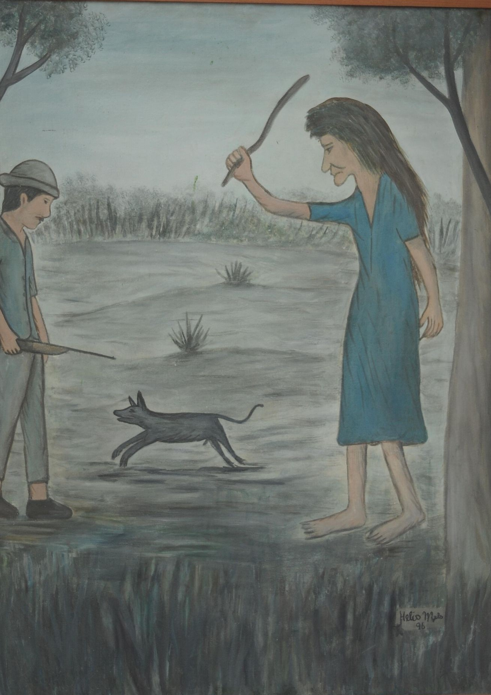
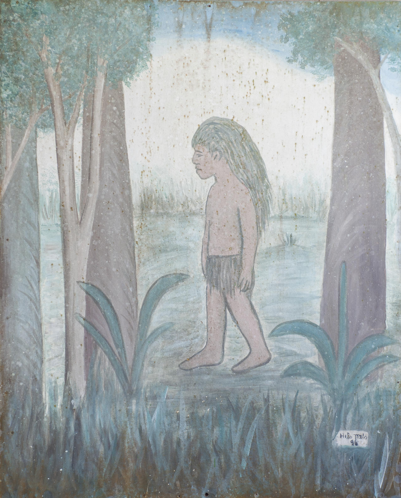
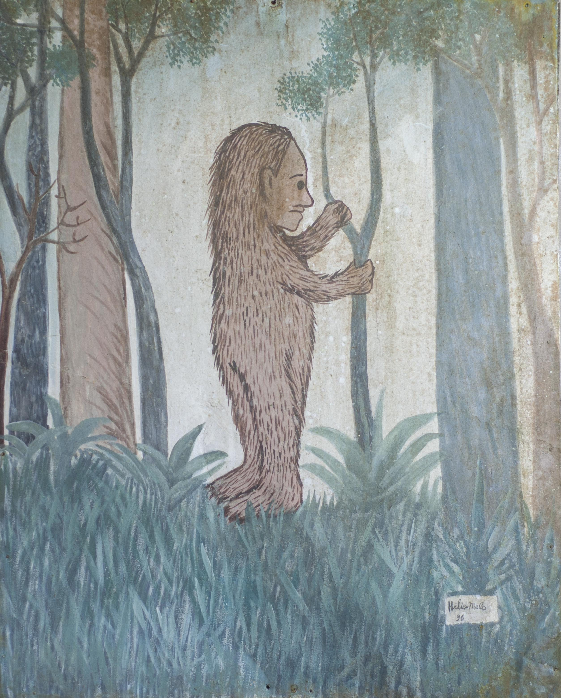
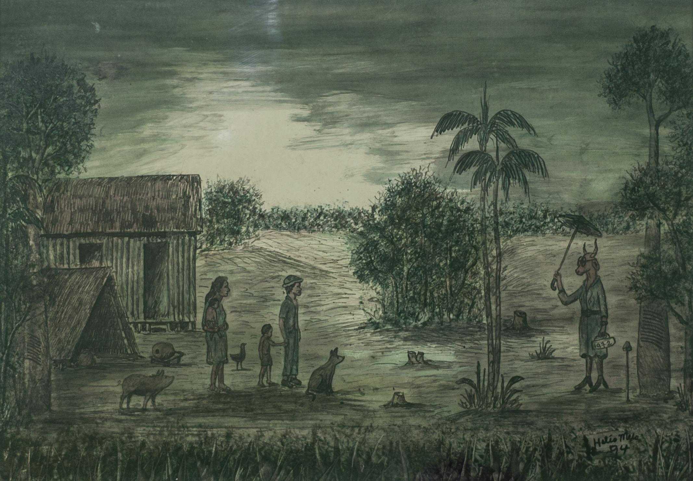

Obras
Nos desenhos de Seo Hélio, os humanos são seres de pequenas proporções perante um ambiente em que a floresta aparece como grande personagem; há também personagens que são seres híbridos de animal e vegetal, ou animais peculiares, como cavalos que sobem em árvores e vacas antropomórficas; seres fabulosos como o Mapinguari e a Mãe-da-Mata, entremeados de fenômenos naturais e telúricos que ultrapassam uma visão realista do mundo.
Figura 2 HÉLIO MELO. Mapinguari, 1996. PVA sobre zinco, 200 X 120 cm. Fundação Garibaldi Brasil, Rio Branco-Acre. Nota: Obra recentemente restaurada por Danilo de S'Acre e Darci Sales. Fotografia de Talita de Oliveira (18/07/2016).
audiodescrição Figura 4 Hélio Melo. Mãe da Mata, 1996. PVA sobre zinco, 150 X 120 cm. Fundação Garibaldi Brasil, Rio Branco, Acre. Nota: Obra recentemente restaurada por Danilo de S'Acre e Darci Sales. Fotografia de Talita de Oliveira.
Seo Hélio explica que a Mãe da Mata castiga o caçador que desobedecer o código mítico de regulação de acesso ao recursos naturais e acrescenta que quando isso acontece o caçador pode voltar para casa porque o cachorro não quer mais nada com a caçada. Neste universo mítico, seres como a Mãe d'água, o Caboclinho, o Mapinguari, dentre outros seres do universo simbólico do homem da floresta funciona como poderoso código de regulação de acesso aos recursos naturais. Assim sendo a lei é internalizada, trata-se de seguir preceitos que foram incutidos através de histórias, lendas e mitos. Esse código de regulação de acesso aos recursos naturais constitui-se na consciência do amazônida, no seu universo simbólico, e o próprio extrativista é regulador de sim mesmo. Na cidade, o artista lamenta a ausência deste código, porém sabe que a educação ambiental é a melhor maneira para proteger os recursos naturais. A questão da ética é colocada como princípio básico da Educação Ambiental vinculada.
audiodescrição Figura 5 Hélio Melo. Caboquinho da Mata, 1996. PVA sobre zinco, 150 X 120 cm. Fundação Garibaldi Brasil, Rio Branco - Acre. Nota: Obra recentemente restaurada por Danilo de S'Acre e Darci Sales. Fotografia de Talita de Oliveira.
O desejo permanente de valorizar o modo de vida do povo tradicional da floresta levou o artista Hélio Melo a criar uma poética do seringal. Essa poética foi sendo construída apesar de e por meio das carências materiais para realizar seus projetos e, principalmente, pela uma vontade de superar a alienação imposta pelo poder opressor.
audiodescrição
Figura 6 Hélio Melo. Matinta Pereira, 1996. PVA sobre zinco, 150 X 120 cm. Fundação Garibaldi Brasil, Rio Branco - Acre. Nota: Obra recentemente restaurada por Danilo de S'Acre e Darci Sales. Fotografia de Talita Oliveira,Rio Branco -AC.
Então Hélio Melo, representante da memória do povo da floresta, é o responsável pela propagação do mito seringueiro. Pelo filtro dos valores comunitários, o personagem seringueiro vem impregnado de ética na efetivação do seu ofício. A repetição do tema seringueiro não se esgota em cada obra, muito pelo contrário se amplia, se configura em realidade distinta do cotidiano, porque se apresenta sintetizado, apresentando, como consequência, questionamentos que podem interferir na realidade mundana.
audiodescrição Figura 3 Hélio Melo. Curupira, 1996. PVA sobre zinco, 150 X 120 cm. Fundação Garibaldi Brasil, Rio Branco -Acre. Nota: Obra recentemente restaurada por Danilo de S'Acre e Darci Sales. Fotografia de Talita de Oliveira.
Seo Hélio que participou da Rio 92 através da exposição no Circo Voador no Rio de Janeiro, reconhecia em suas obras e seus escritos, que os índios são detentores de um conhecimento tradicional que são importantes à conservação e utilização sustentável da diversidade biológica.
audiodescrição
Figura 7: Hélio Melo. Sem título, 1997, nanquim e tinta de extrato de folhas sobre papel cartão ou cartolina, 21x27,5 cm. Coleção Danilo Batista de Sá, Rio Branco - AC - Fotografia de Talita Oliveira.
audiodescrição Figura 8: Hélio Melo. Sem título, 1994, nanquim e tinta de extrato de folhas sobre papel cartão ou cartolina, 38x52,5 cm. Coleção Fundação Municipal de Cultura e Esportes Garibaldi Brasil, Rio Branco - AC - Fotografia de Talita Oliveira.
audiodescriçãoSeo Hélio com sua história peculiar, demonstra que, quanto mais circunscrito o repertório do artista, mas chance terá de se tornar universal, de maneira que, ao retratar a floresta, Hélio Melo registra em sua obra o seringueiro, o Acre, a Amazônia, a questão ambiental e a sustentabilidade. Com isso, relaciona dialeticamente, questões locais com processos universais, globais. Abordagem esta, muito valorizada no artigo 4º que estabelece princípios básicos da educação ambiental no parágrafo VII da Lei 9.795/99 (BRASIL, 1999), que prevê a articulação de questões ambientais locais com as regionais e nacionais. Para Seo Hélio a Educação Ambiental está relacionada com os conceitos internalizados de ética. Esta ética é aprendida através de contos e histórias fantásticas, em que seres sobrenaturais castigam quem maltrata a floresta. Na seção “Os Mistérios da Mata” de sua Coletânea Hélio Melo escreveu: